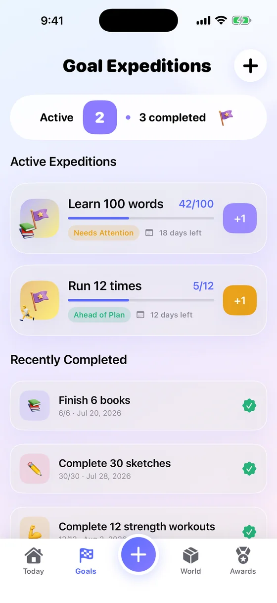

为重复习惯打卡
设置每天、指定星期或每隔几天重复，回顾连胜和近期记录。
iPhone 与 iPad · iOS 17 或更高版本
为重复习惯打卡，把长期目标拆成小步。每一点进度都能帮助 Mochi 和它的世界成长。
免费 · 无广告及应用内购买 · 记录保存在本机

想持续做的事可以设为习惯，有完成期限和次数的事可以设为目标探险。
设置每天、指定星期或每隔几天重复，回顾连胜和近期记录。
设定次数和截止日期，每完成一步就记一次，随时看剩余进度。
习惯打卡帮助 Mochi 成长，目标进度能解锁新地点。本地提醒和实时活动方便查看下一项任务。
例如想在年底前读完 12 本书，可以建一个目标探险，设置目标次数和截止日期，每读完一本记一次。

可以。重复频率可选每天、指定星期或每隔几天，再为需要的习惯设置本地提醒。
在兼容机型上可以用实时活动查看今日进度，支持锁屏和灵动岛。
无需账号。任务和进度保存在本机，应用没有广告或应用内购买。